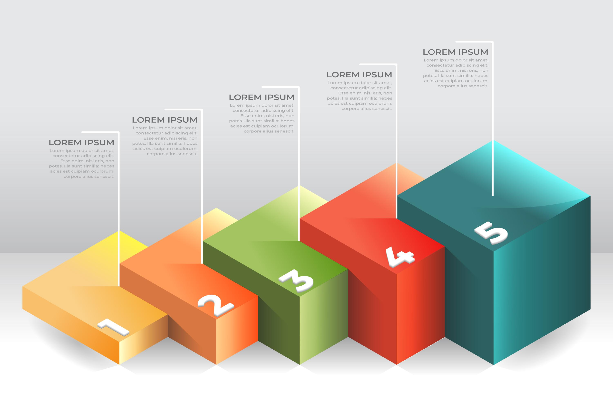

Key Features

Smooth Controls
The game provide a smooth experience regarding moving or visual features
Large Map
The game provide a large map for extended experience

Stages
The game provide 2 different stages and more in the future